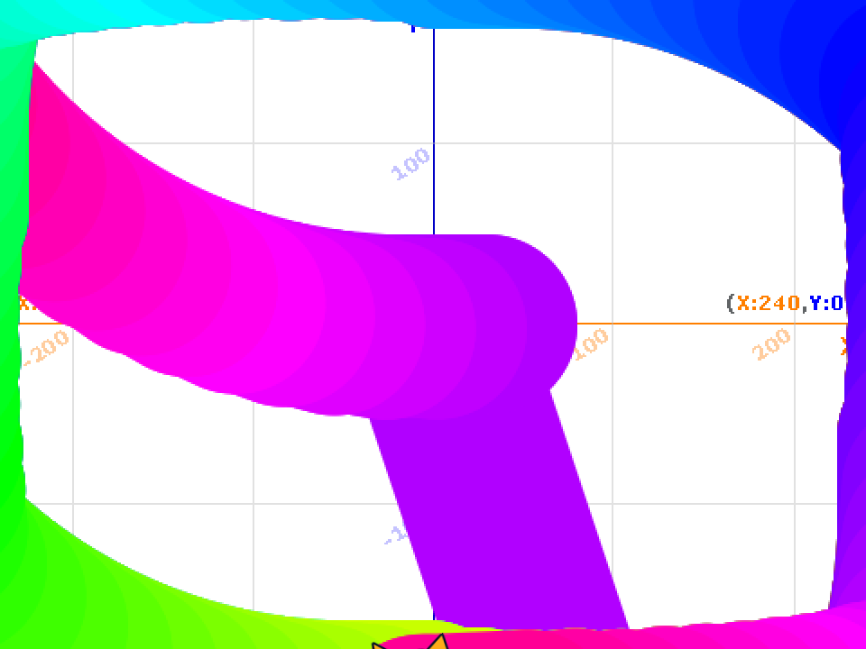
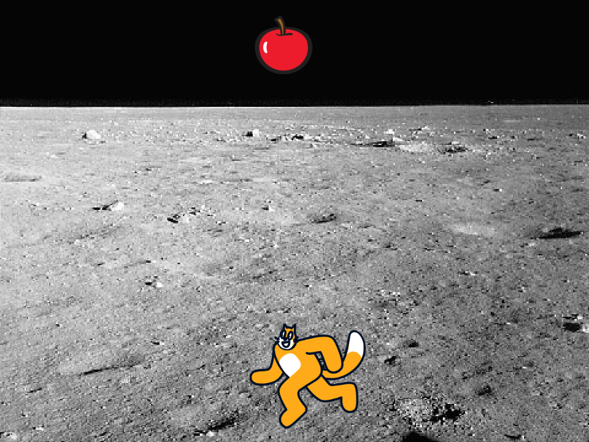

1週目のレポート ： 公大高専１年実習I-1
4B班39番 山根誠志朗
第1週目
1-1 サイエンスアート

1.内容
スクラッチを使って線を書くプログラムを作成した。ただ、線を書くだけでなく猫が移動するたびに色が変わりカラフルできれいな作品になる。
2.感想
スクラッチは、中学生の時に少し触った経験があったが、線を書くというプログラムを組んだのは、初めてで楽しかった。そして、スクラッチに限らずプログラミングの可能性は無限大であると強く感じた。
1-2 ゲーム

1.内容
猫を左右に動かし、落ちてきたリンゴを拾うゲーム。
2.感想
猫を左右に動くようにプログラムしたことはあった。しかし、ボタンを押すごとに猫の動作が変わり走っているように見えるプログラムは、初めて作った。今度、機会があるときは同じように作ってみようと思う。また、点数が加算されるプログラムは、自分が思っている以上に複雑でなく、作りやすかったのが印象に残っている。
1-3 ホームページ作成
私のホームページ
1.内容
クラブと趣味が載っているホームページ。
2.感想
自分のホームページがあるということに感動した。しかし、今回はある程度プログラミングを組んでいただいている中に当てはめるだけだったので、簡単につくることができたが、一からホームページを作るのは、知識や技術が必要だと感じた。ホームページを利用するときの、ホームページを見る目が変わった。